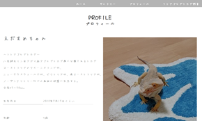

ISHIKAWA
YUKA
PORTFOLIO
ABOUT
はじめまして。Webデザイナーを目指して学習中の石川です。
HTML/CSSを使ったコーディングを中心に勉強しながら、
「見やすくて、ちょっと心が動く」デザインを
つくれるよう日々チャレンジしています。
最初は、自分で飼っているトカゲのサイトを
つくってみました。
大好きなものをテーマにすることで、
楽しく制作に取り組めたのはもちろん、
「だれのために、何を伝えるのか」を考える
きっかけにもなりました。
このポートフォリオには、
そんな制作の記録や日々の成長をまとめています。
興味をもっていただけたら、ぜひご覧ください。
WORKS

フトアゴヒゲトカゲ
コンセプト・ターゲット
家で飼育しているフトアゴヒゲトカゲのサイトです。
シンプルなデザインとフォントで可愛らしい雰囲気を
出しました。
感想
初めて作ったサイトです！
動物写真家の方のサイトのフレームを参考に
作成しました。
コードなどばらばらでお恥ずかしいですが、
調べながらなんとか仕上げました！
※ポップアップの外をクリックしてもウィンドウが閉じます。
ポートフォリオ
コンセプト・ターゲット
このサイトです。
メニューをクリックすると、コンテンツごとに
飛ぶように作りました。
作った作品はポップアップで作成して
見やすくしています。
名前が黒澤なので、黒を基調とした写真を
ヘッダー画像にして、黒猫をフッター画像に
しているところがポイントです。
感想
自分自身を表現するサイトを作るのは
とても難しかったです。
Javascriptでサイトに動きを
付けていこうと思います。
※ポップアップの外をクリックしてもウィンドウが閉じます。
佐柳島（猫の島）
コンセプト・ターゲット
香川県にある佐柳島を紹介するサイトです。
観光地のホームページを参考にして
作りました。
佐柳島は『猫が飛ぶ島』で有名ですが、
SNSで映える写真を取りたくなるようなきれいなホームページに
なるように心がけました。
感想
初めて、ワードプレスを導入して作った作品です。
テーマはcocoonを使用し、
スキンはグレイッシュを使用しました。
ワードプレスをしっかりと使ったことが無かったので、
調べながら手探り状態で作りました。
※ポップアップの外をクリックしてもウィンドウが閉じます。
猫の森（猫カフェ）
コンセプト・ターゲット
猫カフェ(架空)のサイトを作りました。
ワードプレスを使用していて、
レスポンシブデザインになっています。
テーマはlightingを使用していて、
音楽動画挿入、FAQを入れています。
感想
今回は前回使用した「cocoon」というブログテーマではなく、「lighting」という
テーマをを使用しました。
お店のホームページということで
lightingのプラグイン(vkブロック)
を使ったところが工夫できたところだと思います。
あとはもっとおしゃれな雰囲気も出したかったです。
※ポップアップの外をクリックしてもウィンドウが閉じます。
SKILL
-

HTML/CSS
基本的なコードを書くことが可能です。
ポートフォリオ、フトアゴヒゲトカゲのサイトは
HTMLとCSSで作成しています。 -
JavaScript
現在勉強中です。
-
WordPress
ブログ制作、運営もWordPressにて行っております。
-
Photoshop
-
Illustrator
-
Camera/Movie